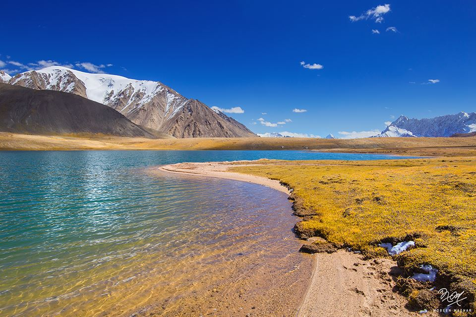

<div class="portfolio-single-load clearfix">
    <div class="custom-full-width-box">
        <div class="custom-container">
            <div class="custom-row align-items-center">
                <div class="custom-image-column">
                    
                </div>
                <div class="custom-text-column">
                    <h2 class="custom-heading">Shimsal Valley</h2>
                    <p class="custom-paragraph">
                        <b>Geography and Landscape:</b>
                        Nestled within the rugged Karakoram mountain range in the Gilgit-Baltistan region of Pakistan, Shimshal Valley is a remote and picturesque area renowned for its stunning natural beauty and challenging terrain. Bordered by China to the north and Afghanistan to the west, the valley covers approximately 3,800 square kilometers of pristine wilderness. Its landscape is characterized by towering peaks, expansive glaciers, and lush alpine meadows, making it a paradise for adventurers and nature enthusiasts alike.
                        <br><br>
                        <b>Population and Ethnicity:</b>
                        The valley is home to a close-knit community primarily composed of Wakhi people, an ethnic group with a distinct language and cultural identity. The population of Shimshal Valley is estimated to be around 2,000 residents, who have inhabited the region for centuries and maintain traditional lifestyles centered around agriculture, animal husbandry, and trade. The Wakhi language is widely spoken in the valley, serving as a vital link to the community's rich cultural heritage.
                        <br><br>
                        <b>Trekking and Adventure:</b>
                        Shimshal Valley is renowned for its trekking and mountaineering opportunities, attracting adventurers from around the globe seeking to explore its pristine wilderness and conquer its formidable peaks. The valley serves as a gateway to several high-altitude trekking routes, including the famous Shimshal Pass trek, which offers breathtaking views of snow-capped mountains and crystal-clear glacial lakes. Other popular destinations for trekkers and climbers include Lupghar Sar, Distaghil Sar, and Kunyang Chhish, providing exhilarating challenges for outdoor enthusiasts.
                        <br><br>
                        <b>Community and Traditions:</b>
                        Community life in Shimshal Valley revolves around traditional customs, festivals, and social gatherings that celebrate the rich cultural heritage of the Wakhi people. Festivals such as the Pamir Festival and Shujaur Festival are occasions for villagers to come together, enjoy traditional music and dance performances, and participate in sports and cultural activities. The strong sense of community and solidarity among residents is evident in their collective efforts to preserve local traditions and promote sustainable development in the valley.
                        <br><br>
                        <b>Conservation and Sustainability:</b>
                        As stewards of their natural environment, the residents of Shimshal Valley are committed to conservation and sustainable practices that protect the region's fragile ecosystems and biodiversity. Community-led initiatives focus on environmental conservation, waste management, and responsible tourism to ensure the long-term preservation of the valley's natural resources. By promoting eco-friendly practices and embracing sustainable development, Shimshal Valley serves as a model for environmentally conscious tourism in mountainous regions.
                        Shimshal Pass:
                        <br><br>
                        <b>Geographical Location:</b>
                        Shimshal Pass is a high mountain pass situated in the heart of the Karakoram Range in northern Pakistan. It lies at an elevation of approximately 4,735 meters (15,534 feet) above sea level, serving as a crucial link between the Shimshal Valley and the neighboring regions. The pass offers spectacular panoramic views of snow-capped peaks, deep valleys, and glaciated terrain, making it a popular destination for trekkers and mountaineers seeking adventure in the rugged wilderness of the Karakoram.
                        <br><br>
                        <b>Trekking Route:</b>
                        The trek to Shimshal Pass is an exhilarating journey that begins in the picturesque Shimshal Valley and ascends through rugged mountain terrain, crossing glaciers, rocky slopes, and high-altitude plateaus along the way. The trek typically takes several days to complete, with trekkers navigating challenging trails and camping at designated sites en route to the pass. Experienced guides accompany trekkers, ensuring their safety and providing valuable insights into the region's geography, culture, and history.
                        Historical Significance:
                        <br><br>
                        Shimshal Pass holds great historical significance as an ancient trade route that has facilitated commerce and cultural exchange between the people of Shimshal Valley and neighboring regions for centuries. Historically, the pass served as a vital corridor for the transportation of goods such as salt, wool, and precious stones

                    </p>
                </div>
            </div>
        </div>
    </div><!-- .custom-full-width-box end -->

</div><!-- end single-project -->
